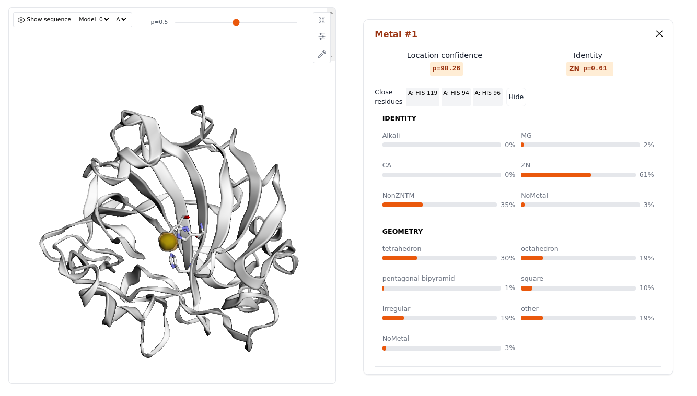

Example usage
CLI usage
Predictions
To use allmetal3d in a project:
Example command allmetal3d -i 3zvz.pdb --models all -m fast
usage: allmetal3d [-h] -i INPUT [-a {all,water3d,allmetal3d}] [-m {fast,all,site}] [-c CENTRAL_RESIDUE]
[-r RADIUS] [-t THRESHOLD] [-p PTHRESHOLD] [-b BATCH_SIZE] [-o OUTPUT_DIR]
AllMetal3D Command Line Interface
options:
-h, --help show this help message and exit
-i INPUT, --input INPUT
Input PDB file
-a {all,water3d,allmetal3d} --models {all,water3d,allmetal3d}
Models
-m {fast,all,site}, --mode {fast,all,site}
Prediction mode
-c CENTRAL_RESIDUE, --central_residue CENTRAL_RESIDUE
Central residue
-r RADIUS, --radius RADIUS
Distance threshold
-t THRESHOLD, --threshold THRESHOLD
Threshold
-p PTHRESHOLD, --pthreshold PTHRESHOLD
Probability Threshold
-b BATCH_SIZE, --batch_size BATCH_SIZE
Batch Size
-o OUTPUT_DIR, --output_dir OUTPUT_DIR
Output directory
Web app

Execute the command allmetal3d_server in the installed environment and navigate to the printed url in the format xxx.gradio.live
Within python
Run predictions
import os
import allmetal3d
# download input file
os.system("wget https://files.rcsb.org/download/3zvz.pdb")
allmetal3d.predict("3zvz.pdb")
launch server
allmetal3d.launch_server()